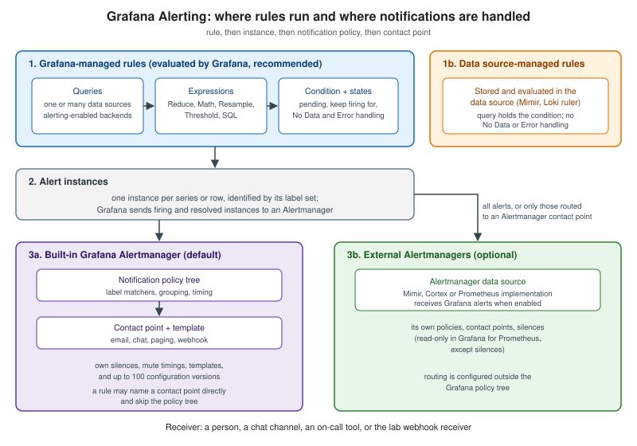

Grafana Alerting Architecture
|
This content was generated with the assistance of AI and should be verified against the official documentation before being relied on in production. |
Checked on 2026-11-09 against Grafana 13.3.x.
Grafana Alerting is two cooperating systems that are easy to mistake for one. The first evaluates: it runs the queries of every alert rule on a schedule, decides which series breach the condition and keeps a state per series. The second notifies: an Alertmanager receives the firing and resolved alerts, groups them, applies silences and mute timings, routes them by label and sends them to a contact point. Knowing which system a setting belongs to is what lets you answer the two questions that come up in every incident review: "why did this rule not fire?" (evaluation) and "why did nobody hear about it?" (notification).
This page describes the parts and how they fit together. The concepts that are not specific to Grafana (what a state machine is, why grouping exists) are in Alerting Fundamentals, and the design advice is in Designing Actionable Alerts; neither is repeated here. The Prometheus-centred view of Grafana alerting, written for readers who already run Prometheus and Alertmanager, is in Grafana alerting (Prometheus section). The rest of this group of pages goes deeper: Alert Rules: Queries and Conditions, Rule Evaluation, States and Missing Data, Notification Policies and Contact Points and Integrations. The running example is the Bookshelf service (see Metrics and Observability).
The model in one picture
Grafana describes its alerting as built on the Prometheus alerting model. A rule is evaluated periodically; one rule can produce many alert instances, one per time series or table row; an instance fires when its condition is breached; and firing and resolved instances are sent as notifications, either directly to a contact point or through notification policies.

The same page names the core pieces, which the rest of this page and the following pages take one at a time:
-
Alert rules hold one or more queries and expressions that select the data, plus a condition (a threshold). They also carry the evaluation interval, a pending period, labels and annotations, and the way notifications are delivered.
-
Alert instances are the per-series results of a rule. Only firing or resolved instances are included in notifications.
-
Contact points define the destination (email, a chat tool, an incident management system such as Grafana IRM or PagerDuty, a webhook) and the message.
-
Notification policies are a tree that matches alerts to contact points by label. The root of the tree is the Default notification policy, which handles every instance that no other policy takes.
-
Silences and mute timings pause notifications without stopping evaluation: silences for a one-time pause such as a maintenance window, mute timings for recurring ones such as nights and weekends.
Source: Grafana: Introduction to Grafana Alerting ("How it works", key concepts).
Rule types: Grafana-managed and data source-managed
The Grafana docs distinguish three kinds of rule, and the difference is where the rule lives and who evaluates it.
-
A Grafana-managed alert rule is stored in Grafana and evaluated by Grafana. It can query many backend data sources, including several in one rule, and it supports expressions, advanced alert conditions, images in notifications and handling of the No Data and Error states. The data source must be a backend plugin with alerting enabled.
-
A data source-managed alert rule is stored in the data source (Prometheus, Mimir or Loki) and evaluated there, by the ruler of that system.
-
A recording rule is evaluated like an alert rule but stores its result as a new time series, so that expensive or frequently used queries are computed once. Recording rules exist in both flavours; see Recording Rules.
The data source-managed page lists exactly what you give up when you leave Grafana-managed rules, which is the argument for Grafana’s recommendation to prefer them:
| Capability | Grafana-managed | Data source-managed |
|---|---|---|
Where evaluation happens |
In Grafana |
In the data source |
Data sources in one rule |
Several, combined with expressions |
One; the condition has to be inside the query, with no expressions or separate alert condition |
Creating and editing from Grafana |
Any alerting-enabled backend data source |
Mimir and Loki only; Prometheus rules can be viewed but not created or edited (when Manage alerts via Alerting UI is on) |
No Data and Error handling |
Yes |
No |
Stale alert instance handling |
Yes |
No |
Images in notifications |
Yes |
No |
Role-based access control |
Yes, per folder |
No |
Alert state history and version history |
Yes |
No |
Terraform provisioning |
Yes |
No |
Organisation unit |
Folders |
Namespaces |
Data source-managed rules do support horizontal scalability, at the price of operational complexity, and the page still
recommends Grafana-managed rules wherever possible. Creating a data source-managed rule needs write permission on the Mimir
or Loki data source, the ruler API enabled (for Mimir the Query API and Ruler API must share one URL under the /prometheus
prefix; for Loki the default local rule storage only allows viewing), and the Editor or Admin role to edit or delete. In
the rule form you choose the rule type Data source-managed, write a PromQL or LogQL query that already contains the
condition, and pick a namespace and evaluation group; the rules inside a group are evaluated sequentially. To stop Grafana
from managing alerts for one data source, clear Manage alerts via Alerting UI in its settings.
What this means for Bookshelf: the lab’s Prometheus-compatible store is queried through the prometheus data source, and the
five lab alerts are Grafana-managed rules. That is also the only way to build the "error-log spike" alert on the loki data
source with the same machinery as the metric alerts, which is the practical reason to choose Grafana-managed rules for a
mixed Prometheus and Loki estate. The Prometheus-native alternative (rule files, promtool test rules, Alertmanager with no
Grafana in the loop) is compared in Grafana alerting (Prometheus section).
Moving existing rules into Grafana
Rules that already exist in Mimir, Loki or Prometheus can be imported as Grafana-managed rules, from the UI (Import to
Grafana-managed rules, source Existing data source-managed rules or Prometheus YAML file) or with mimirtool and
cortextool. The original rules stay where they are and copies are created in a target folder. The import details are in
Alert Rules: Queries and Conditions.
The Prometheus Alerting plugin (13.3)
Grafana 13.3 starts moving the management of data source-managed alerting out of the core UI. The What’s new page says that alert rule management for Prometheus, Mimir and Loki "is moving into a dedicated Grafana app plugin, Prometheus Alerting". The plugin manages rule groups and namespaces in a Prometheus-compatible ruler, and the routes, receivers, templates, silences, time intervals and inhibition rules of an external Alertmanager. With the plugin installed and the hand-off enabled, Grafana sends the data source managed alerting URLs to the matching page in the plugin, so shared links and bookmarks land there instead of in the core alerting UI. Grafana-managed alerting stays in core and both experiences run side by side in the same instance.
The release status differs per edition: the page lists it as public preview in Grafana Cloud and as experimental for Open Source and Enterprise. Treat it as a feature to try in a test instance, not to build a production runbook on; the Grafana-managed rules covered by this group of pages are not affected. The page does not name the setting that enables the hand-off, so follow the plugin’s own documentation when you install it.
Source: Grafana: What’s new in 13.3.
The Alertmanager: built-in and external
Grafana evaluates the rules and sends the firing and resolved alerts to an Alertmanager, which handles the notifications. That separation of evaluation from delivery is inherited from Prometheus.
-
The Grafana Alertmanager is built in, is the default, extends the Prometheus Alertmanager, appears as "Grafana" in the UI and handles only Grafana-managed alerts.
-
External Alertmanagers (a Prometheus Alertmanager, or the Alertmanager of Mimir or Cortex) can receive Grafana’s alerts as well, and several can be used at once. A typical reason is to forward Grafana-managed alerts to the Alertmanager that already handles the alerts of Prometheus.
-
Each Alertmanager has its own contact points, templates, notification policies, mute timings, silences and active notifications. A silence created in the Grafana Alertmanager does nothing to an alert already delivered to an external one. The Choose Alertmanager drop-down switches the Alerting UI between them.
You add an external one as a data source (Connections > Data sources, type Alertmanager). The options are the name, whether it is the default, the implementation (Mimir, Cortex or Prometheus), Receive Grafana Alerts, the HTTP URL and the access mode (only Server works).
apiVersion: 1
datasources:
- name: Alertmanager
type: alertmanager
url: http://alertmanager:9093
access: proxy
jsonData:
implementation: prometheus
handleGrafanaManagedAlerts: falseReference: Grafana: Alertmanager data source (provisioning). The
host name alertmanager is a placeholder for an Alertmanager container that you add to the lab; the lab does not ship one.
Setting jsonData.implementation is optional and defaults to mimir, and handleGrafanaManagedAlerts: true only takes
effect when forwarding is also enabled under Alerting > Settings.
Choosing where alerts go
There are three patterns, taken from the configuration page:
-
Internal only: keep the default. The Grafana Alertmanager handles every Grafana-managed alert.
-
Everything to an external Alertmanager: enable Receive Grafana Alerts in the data source, then click Enable for that Alertmanager in Alerting > Settings. Its status becomes "Receiving Grafana-managed alerts", and every Grafana-managed alert is forwarded to all Alertmanagers with that status, alongside the built-in handling.
-
Selected alerts to an external Alertmanager: add it as an Alertmanager contact point and select that contact point in a notification policy or in individual alert rules.
Limits worth knowing before you choose: Grafana does not forward Grafana-managed alerts to the Alertmanager of Amazon Managed Service for Prometheus; for a Prometheus Alertmanager you can manage silences from the Grafana UI but contact points, notification policies and templates are read-only, because the Prometheus Alertmanager HTTP API cannot update them; and the built-in Alertmanager keeps at most 100 configuration versions per organisation, so frequent automated changes consume the history (batch them, export the configuration before large changes, and test in staging). Administrators can view the snapshots on the Settings page, compare them with the latest configuration and roll back.
Source: Grafana: Configure Alertmanagers.
Two version notes. Grafana 13.0 removed or restricted the legacy Alertmanager configuration endpoints, and
GET /api/alertmanager/grafana/api/v2/status needs the alert.notifications.system-status:read permission, so scripts written
for older versions need a check. And Grafana 13.3 adds an Alertmanager configuration import (public preview in Cloud, Open
Source and Enterprise) that brings an existing Prometheus or Mimir Alertmanager configuration in next to the alert rules.
Source: Grafana: What’s new in 13.0 and Grafana: What’s new in 13.3.
Following one alert through the system
Take the Bookshelf rule "high 5xx ratio", built in Alert Rules: Queries and Conditions:
-
Rule: every minute, Grafana runs the PromQL query against the
prometheusdata source and evaluates the condition. The rule lives in the folderbookshelf, which is where permissions for the rule are decided (see Users, Teams and Permissions). -
Instance: the result is one series per label set. The instance carries the labels returned by the query, the labels set on the rule (for example
application="bookshelf"andteam="bookshelf-sre") and the built-inalertnameandgrafana_folderlabels. Its state moves through Normal, Pending and Alerting as described in Rule Evaluation, States and Missing Data. -
Notification policy: when the instance is Alerting, the Alertmanager matches its labels against the policy tree. The Default policy takes whatever no child policy matches. Grouping and timers decide when the message leaves (see Notification Policies).
-
Contact point: the matched policy names a contact point, here the lab webhook receiver, which renders the message from a template (see Contact Points and Integrations).
A rule can also name a contact point directly (the Default view of Configure notifications), which skips the policy tree. That is simple for a first rule and wrong for a fleet: the routing decision is then spread over every rule instead of living in one place. The observability of this pipeline itself is the subject of Monitoring Alerts and State History, and running it in a cluster of Grafana instances is covered in Alerting HA and Operations.
What can go wrong
-
Mixing up the two Alertmanagers. A silence, mute timing or contact point created while the Choose Alertmanager drop-down shows an external Alertmanager does not exist in the Grafana one, and the other way round. When "the silence did not work", check which Alertmanager received the alert.
-
Expecting Grafana features on data source-managed rules. There is no No Data or Error handling, no state history and no Terraform provisioning for them, so a rule that has to be audited or provisioned belongs in Grafana-managed rules.
-
Treating the Prometheus Alerting plugin as settled. It is experimental on Open Source and Enterprise in 13.3.
-
Losing configuration history. The 100-version limit of the built-in Alertmanager means a busy automation can push out the version you wanted to roll back to.
-
UI-only rules. A Grafana-managed rule deleted in the UI cannot be recovered by the person who deleted it (only admins can restore deleted rules), so keep rules in provisioning files, Terraform or the API for anything that matters, as described in Provisioning Alerting Resources.
Verify it in the lab
In the lab (Hands-on Lab, profile grafana):
-
Open Alerting > Settings. The built-in Grafana Alertmanager is listed; open the Choose Alertmanager drop-down and confirm that it is the only one unless you added an Alertmanager data source.
-
Open Alerting > Alert rules and click New alert rule. Look at the Define query and condition and Configure notifications sections: both offer Default and Advanced views. Choose Advanced for notifications and use Preview routing to see which policy would take an alert labelled
application="bookshelf". -
In Alerting > Notification policies find the Default policy and its contact point; in Contact points confirm the webhook receiver.
-
Optional: add an Alertmanager container, provision the data source from the YAML above with
handleGrafanaManagedAlerts: true, enable it in Alerting > Settings, and confirm its status reads "Receiving Grafana-managed alerts". -
Start the load generator in failing-request mode, wait for the 5xx rule to fire and compare what the webhook receiver gets with the labels you saw in the rule preview.
In the books
McCollam (Getting Started with Grafana) was written when Grafana 8 introduced the new alerting as an opt-in alongside the legacy dashboard alerts, and its alerting chapter shows a rule type field for choosing where a rule is evaluated; Hernandez (Building IoT Visualizations using Grafana) explains Grafana’s use of the Prometheus Alertmanager and the embedded Alertmanager. The architecture they describe survived: evaluation in Grafana, delivery through an Alertmanager, routing by label. What changed is that the legacy alerting is gone (removed in Grafana 11.0), the opt-in switch no longer exists, data source-managed management is moving into a separate plugin in 13.3, and the Alertmanager configuration has versioning and import.